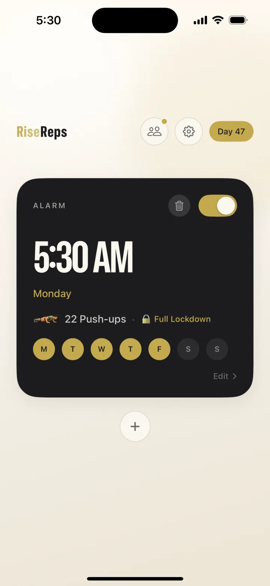
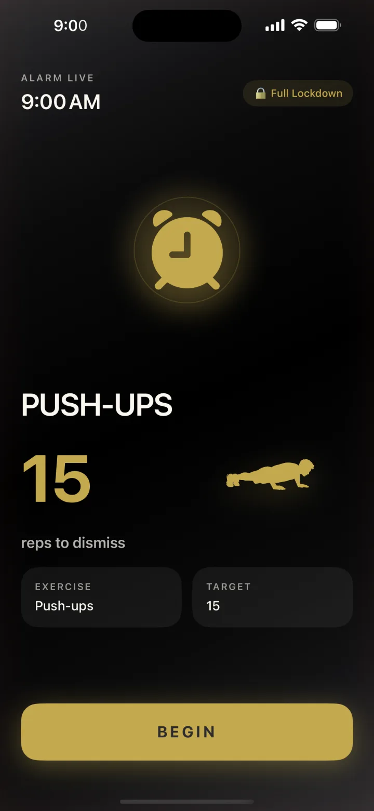
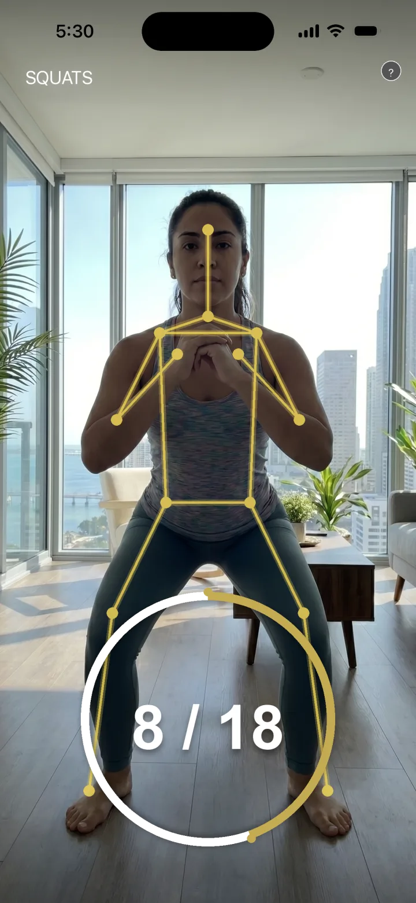
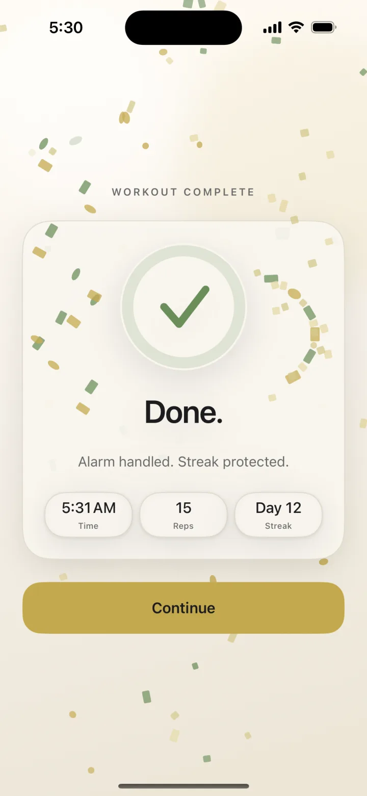
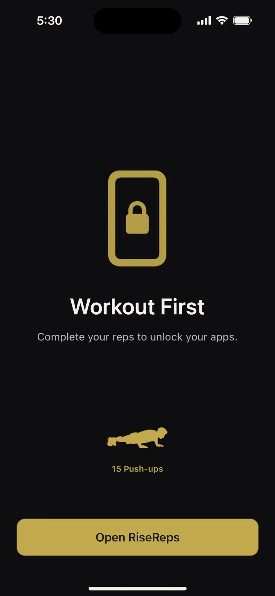
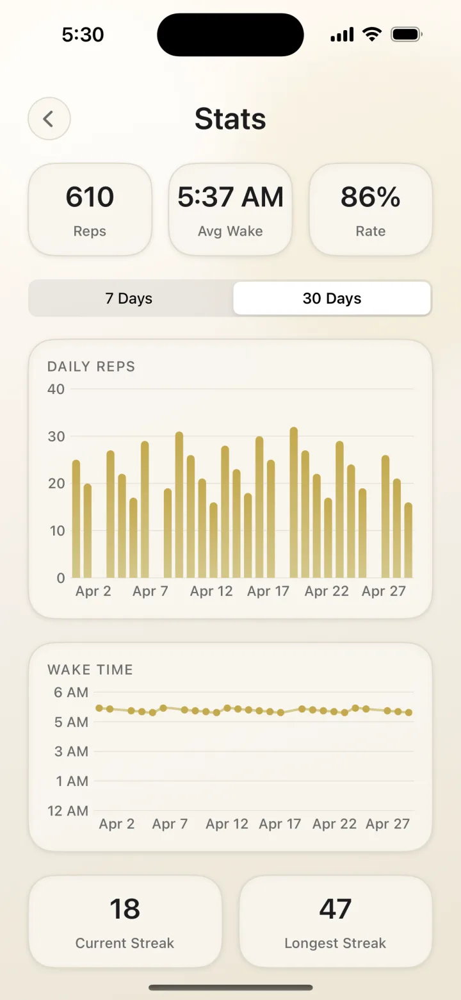
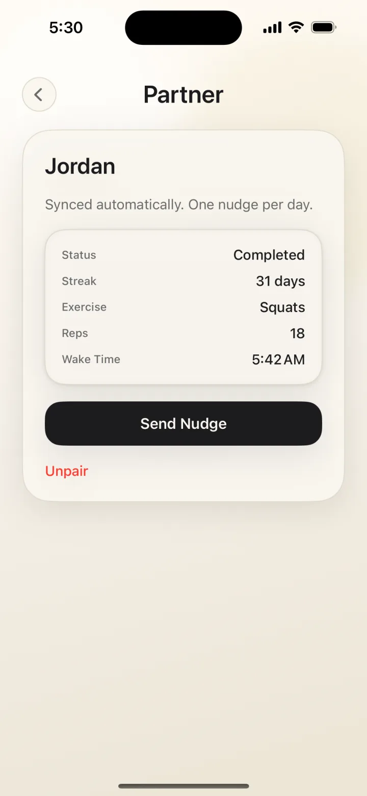

Step 01
Set your alarm.
Pick the time, the exercise, and how strict you want it. Lockdown mode hides every other app until you finish.

No snooze button. No tap-to-dismiss. When the alarm fires, your camera counts your push-ups, squats, or jumping jacks — and it only goes quiet when your reps are done. Wake up early, move first, and win the morning before it starts.

Set it the night before. Move your body when it goes off. Watch your wake-up streak compound.
Pick the time, the exercise, and how strict you want it. Lockdown mode hides every other app until you finish.

The alarm fires. The camera counts each rep using on-device pose detection. No fake taps. No shortcuts.

Reps verified. Alarm off. Streak protected. You start the day already on the board.

Push-ups, squats, or jumping jacks — you choose the movement and the rep count. Built-in progression raises the bar each week, so the habit grows with you.
Most alarm apps reward weakness — a snooze button, a swipe, a math puzzle you can solve half-asleep from bed. RiseReps removes the negotiation entirely: the only way out is through your reps.

Every morning logs itself. Reps, wake time, completion rate, longest streak — the feedback loop that turns one good morning into a morning routine.

Pair with a friend and your stats sync automatically. They see your streak. You see theirs. One clean nudge per day when someone needs to get moving.

Set it tonight. Move tomorrow. Watch what changes when the first decision of your day is already won.
Free to download · Free trial included · iPhone only, for now